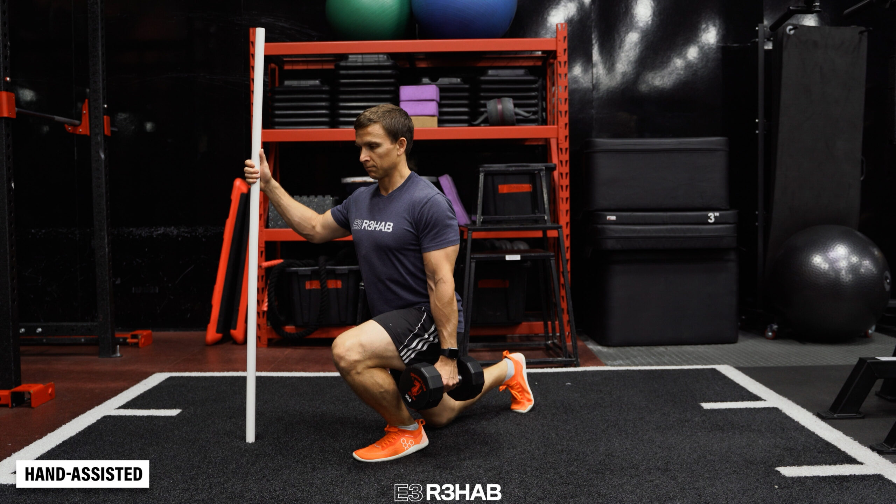
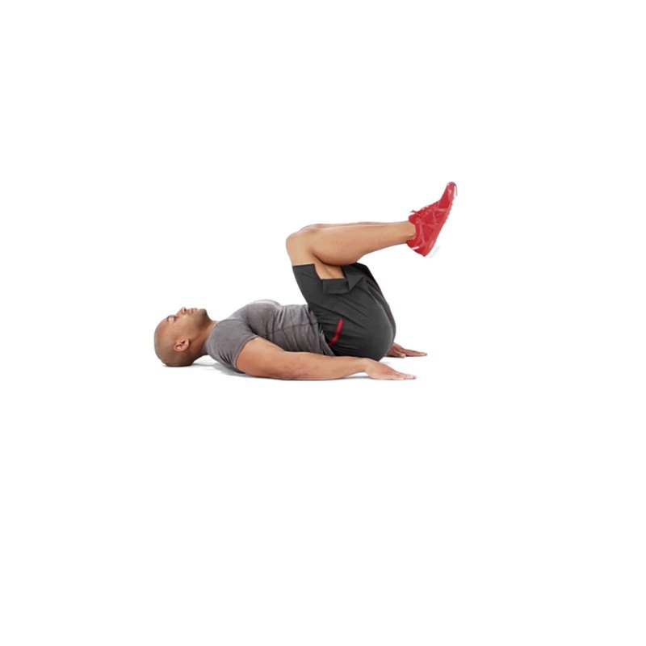
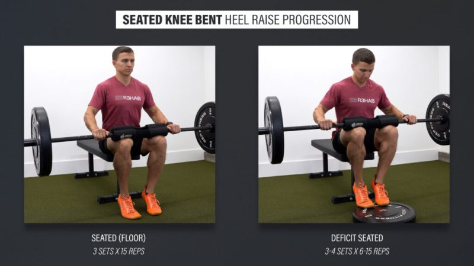
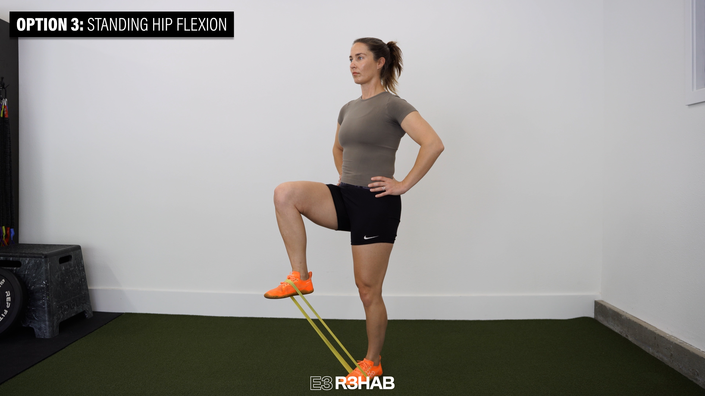
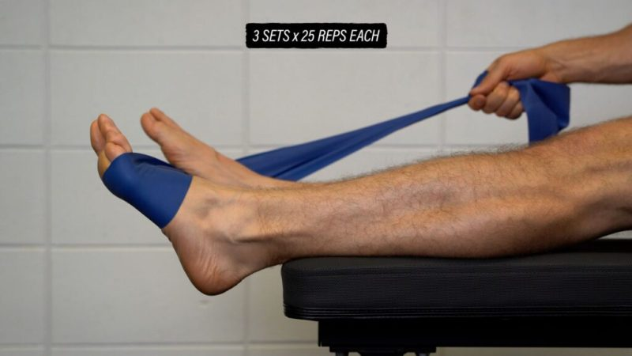
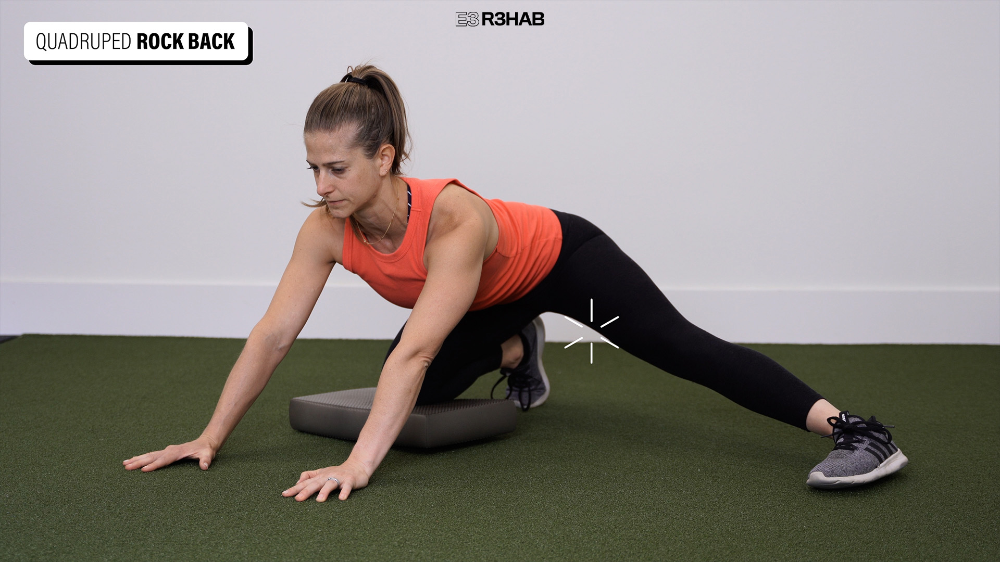

Your complete session
Lower B
Follow the sequence at your own pace. Choose manageable loads and comfortable ranges; leave the prescribed good repetitions in reserve.
Warm up
Easy bike
3 minutes, easy

Keep this conversational and easy; adjust the bike to your comfort. Photo: Hospital for Special Surgery ↗ - Pedal comfortably without chasing fatigue.
Keep this easy. Stop a movement that produces pain, catching, apprehension or loss of control; do not force end range.
Unweighted squat rehearsal
1 × 6, comfortable depth

Use a comfortable depth and easy pace. Photo: E3 Rehab ↗ - Keep a comfortable foot stance and easy depth.
Keep this easy. Stop a movement that produces pain, catching, apprehension or loss of control; do not force end range.
Unweighted hip hinge
1 × 6, comfortable reach

Send the hips back; use both feet evenly. Photo demonstrates a staggered stance. Photo: On Target Publications / Evan Osar ↗ - Send hips back; keep reach easy and do not chase toe touch.
Keep this easy. Stop a movement that produces pain, catching, apprehension or loss of control; do not force end range.
Supported ankle weight shift
1 × 6 each side

Shift only slightly forward; no need to touch the wall or force a stretch. Photo: West End Physio ↗ - Shift forward slightly with heel supported; return.
- No forced heel-attachment stretch.
Keep this easy. Stop a movement that produces pain, catching, apprehension or loss of control; do not force end range.
Easy bilateral floor calf raise
1 × 8, both legs together; includes transition

Use hand support and stop the lowering at floor level. Photo: E3 Rehab ↗ - Rise and lower together, stopping at floor level.
- Keep the rehearsal easy.
Keep this easy. Stop a movement that produces pain, catching, apprehension or loss of control; do not force end range.
Strength & targeted rehab
Supported split squat
Strength · unilateral; both sides
Rest: 105 seconds to rest and switch sides; 90 seconds after both sides.
Light rehearsal sets first:
- 8 reps each side; rest 45 seconds afterward.
- 5 reps each side; rest 60 seconds afterward.
- 3 reps each side; rest 90 seconds afterward.
3 × 8–10 each side · 2–3 good reps left

Use hand support and a comfortable depth; omit the load for the easier swap. Photo: E3 Rehab ↗ - Begin with a comfortable supported split squat.
- Heel wedge changes ankle demand; front-foot elevation increases available depth.
- Rear knee need not touch the floor.
Stop for new or increasing joint/tendon-region pain, loss of control or altered everyday function. Repeat the last tolerable dose or reduce it; persistent or substantial recurrence warrants assessment.
Seated leg curl
Strength · bilateral simultaneous; both legs together
Rest: 120 seconds between sets.
Light rehearsal sets first:
- 6 reps; rest 60 seconds afterward.
- 3 reps; rest 90 seconds afterward.
3 × 8–12 · 2–3 good reps left

Keep the thigh pad secure; bend both knees against the resistance. Photo: E3 Rehab ↗ - Align knee and machine pivot.
- Use the prone option if seated hip flexion is uncomfortable.
Stop for new or increasing joint/tendon-region pain, loss of control or altered everyday function. Repeat the last tolerable dose or reduce it; persistent or substantial recurrence warrants assessment.
Reverse crunch
Strength · bilateral trunk/pelvic movement
Rest: 90 seconds between sets.
3 × 8–12 · 2–3 good reps left

Curl the pelvis a little off the floor; use a smaller motion for the swap. Photo: Muscle & Fitness ↗ - With knees bent, gently curl the pelvis toward the ribs.
- Lower slowly; keep arms at the sides and avoid leg swing.
Stop for new or increasing joint/tendon-region pain, loss of control or altered everyday function. Repeat the last tolerable dose or reduce it; persistent or substantial recurrence warrants assessment.
Seated bent-knee calf raise, floor level
Rehab · bilateral simultaneous; both legs together
Rest: 120 seconds between sets.
Light rehearsal sets first:
- 8 reps; rest 60 seconds afterward.
3 × 10–15 · 2–4 good reps left

Use floor-level feet and padded resistance on the thighs; dumbbells or machine may differ. Photo: E3 Rehab ↗ - Both legs together; heels stop at floor level.
- Keep thigh pads comfortable; no bounce.
Stop or reduce the set for increasing heel-attachment pain or loss of controlled heel-raise range. A meaningful later/next-morning increase calls for less load/range or fewer sets; persistent worsening warrants assessment.
45-degree back extension
Rehab · bilateral trunk/hip movement
Rest: 90 seconds between sets.
Light rehearsal sets first:
- 8 reps; rest 60 seconds afterward.
2 × 8–12 · 2–4 good reps left

Hinge at the hips and stop at a straight body line; use a shorter unloaded arc for the swap. Photo: E3 Rehab ↗ - Pad below hip crease; feet secure.
- Return toward a comfortable straight trunk, without forced arching.
Stop for new or increasing joint/tendon-region pain, loss of control or altered everyday function. Repeat the last tolerable dose or reduce it; persistent or substantial recurrence warrants assessment.
Seated hip-adduction machine
Rehab · bilateral simultaneous; both legs together
Rest: 90 seconds between sets.
2 × 10–15 · 2–3 good reps left

Move the thighs inward through a comfortable arc. Photo: Women’s Health Taiwan / Hearst ↗ - Bring both legs inward together.
- Avoid a forced wide groin stretch.
Stop for new or increasing joint/tendon-region pain, loss of control or altered everyday function. Repeat the last tolerable dose or reduce it; persistent or substantial recurrence warrants assessment.
Standing cable hip flexion
Rehab · unilateral; both sides
Rest: 30 seconds to rest and switch sides.
1 × 10–12 each side · 2–3 good reps left

The photo shows a band; use a low cable ankle cuff and stable hand support in this plan. Photo: E3 Rehab ↗ - Support yourself and keep the moving knee bent.
- Avoid groin pinch or trunk swing.
Stop for new or increasing joint/tendon-region pain, loss of control or altered everyday function. Repeat the last tolerable dose or reduce it; persistent or substantial recurrence warrants assessment.
Banded ankle eversion
Rehab · unilateral; both sides
Rest: 30 seconds to rest and switch sides.
1 × 12–15 each side · 2–4 good reps left

Move the forefoot outward without rotating the whole leg. Photo: E3 Rehab ↗ - Sit with the band pulling the forefoot inward; move the forefoot outward.
- Keep the knee and hip still.
Stop for new or increasing joint/tendon-region pain, loss of control or altered everyday function. Repeat the last tolerable dose or reduce it; persistent or substantial recurrence warrants assessment.
Mobility
Supported half-kneeling hip-flexor stretch
2 × 30 seconds each side

Use hand support if needed; stay upright without forcing depth. Photo: E3 Rehab ↗ - Use a small forward shift with a gently tucked pelvis.
- Do not arch the back or force the rear hip.
Keep this easy. Stop a movement that produces pain, catching, apprehension or loss of control; do not force end range.
Supported adductor rock-back
1 × 8 each side

Rock back gently; choose forearm or elevated support if your wrists prefer it. Photo: E3 Rehab ↗ - One knee rests on mat; the other leg reaches sideways within comfort.
- Rock hips back slightly; no forced groin stretch or painful arm support.
Keep this easy. Stop a movement that produces pain, catching, apprehension or loss of control; do not force end range.
Use the interactive copy for swaps and temporary adjustments. No workout history is recorded.